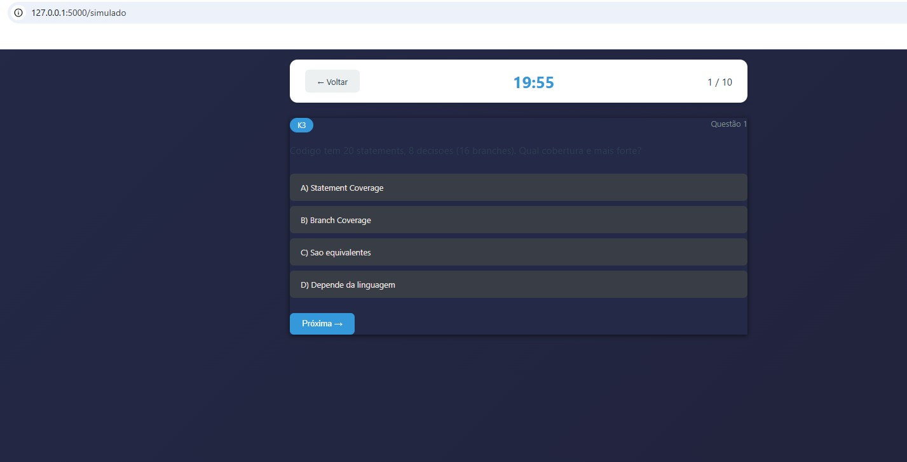

ISTQB CTAL-TA
Capturas de Tela do Sistema
Dashboard

Dashboard Principal
Visão geral do sistema com estatísticas de progresso, acesso rápido às funcionalidades principais e resumo do desempenho nos estudos.
Simulados

Seleção de Simulados
Lista de simulados disponíveis organizados por capítulo do syllabus ISTQB CTAL-TA, com opção de simulado completo.

Resolução de Questões
Interface limpa e intuitiva para resolver questões durante o simulado, com navegação entre perguntas e marcação de respostas.

Resultados e Feedback
Análise detalhada do desempenho com pontuação, respostas corretas/incorretas e estatísticas por capítulo.
Flashcards

Biblioteca de Decks
Organização dos flashcards por capítulos do syllabus, facilitando revisões focadas em tópicos específicos.

Interface de Estudo
Sistema interativo de flashcards para memorização ativa, com visualização de frente/verso dos cartões.
Gerenciamento de Arquivos

Biblioteca de Materiais
Upload de arquivos PDF/TXT e visualização da biblioteca completa de materiais de estudo, com distinção entre anexos e uploads.

Configuração de Geração
Modal para configurar a geração de questões com IA, permitindo escolher número de questões, estratégia de LLM e capítulo do syllabus.
Gerações com IA

Acompanhamento de Jobs
Lista de jobs de geração de questões com IA, mostrando status (processando, concluído, erro) e progresso em tempo real.

Revisão e Edição
Interface completa para revisar, editar e validar questões geradas pela IA antes de salvá-las no banco de questões.
Plano de Estudos

Cronograma de Estudos
Organização e acompanhamento do plano de estudos com marcos, objetivos e progresso por tópico.